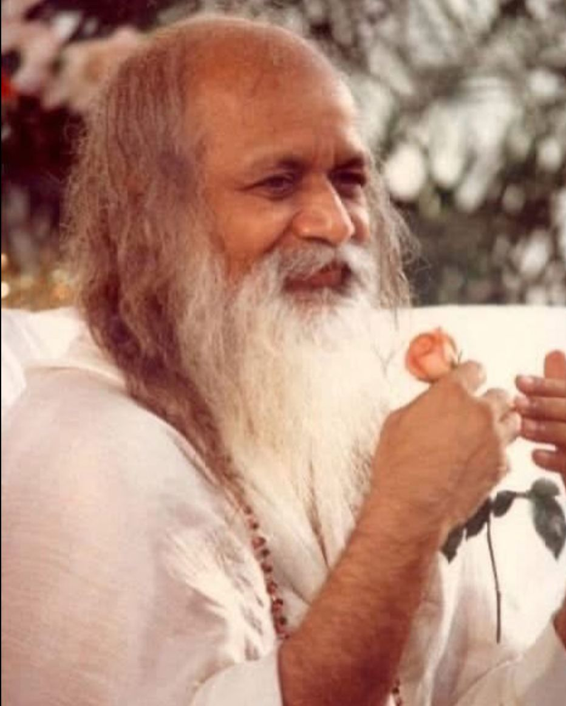

Reduces Stress & Anxiety
Alleviates stress by allowing the mind to settle inward naturally beyond active thinking.
Transcendental Meditation® — a simple, effortless practice that helps you reconnect with yourself, experience deep inner rest and unlock your natural potential. Taught one-on-one and practiced for just 20 minutes twice a day.
TM IS UNIQUE
Featured In
TM is widely covered internationally for its effortless practice, extensive scientific research documenting its wide range of benefits, including in:
Benefits of Transcendental Meditation
Alleviates stress by allowing the mind to settle inward naturally beyond active thinking.
Enhances concentration, mental clarity, and cognitive function through deep inner rest.
Helps improve sleep quality naturally by allowing the body to release accumulated stress.
Supports optimal heart function through deep rest and reduced mental and physical stress.
Encourages a lighter, happier, more balanced and positive state of mind through deep inner rest.
Encourages a lighter, happier, more balanced and positive state of mind daily.

Maharishi Mahesh Yogi
Transcendental Meditation was introduced by Maharishi Mahesh Yogi and continues today through certified teachers, one-on-one instruction, and a living tradition of effortless practice.
The approach remains supported by a large body of scientific study and a global community of practitioners.
"The quality of life is not determined by the quality of your thoughts, but by the quality of the consciousness from which your thoughts arise."
TM vs Other Practices
Real voices from practitioners who found greater calm, clarity, and ease through Transcendental Meditation.
“TM reduced stress and enhanced my focus.”
Dr Jessica Ashe · Assistant Director, Miami University
“TM provides deep relaxation, reduces stress, and enhances mental clarity.”
Dr. Mani Das · Mental Health Consultant and an Educator
Learning Transcendental Meditation under Debasish Sarkar helped me feel more focused while studying, calmer in stressful situations, and mentally refreshed every day.
Titli Saha · Student
The sessions were clear, authentic, and thoughtful. The practice became easy to understand, and the guidance made the whole learning process calm and meaningful.
Ritika Sharma · Professional
It has been the easiest and most convenient practice I have found in years, and I am grateful for the care, kindness, and guidance that made it such a valuable decision.
Anupam Bhattacharyya · IT Professional
In 2020, I reached a point where I felt completely lost and disconnected from the things I once enjoyed the most. I realized that, for the sake of my own well-being and sanity, I needed to make a conscious decision to change the direction of my life. I chose to put a hold on a full-time responsibility that I had and focus instead on rediscovering my true self. I began practicing yoga regularly, reading books on well-being, and attending therapy. While these helped, I still felt that something important was missing—something that could bring me back to a state of calm and balance. In 2024, I learned about Transcendental Meditation through a friend who had started practicing TM during the pandemic. During a trip to India, I had the opportunity to learn TM myself and discover the role it could play in the missing part of my journey. TM brought me a sense of contentment, genuine joy, and inner peace. It helped me reconnect with a level of happiness that had been absent from my life since 2020. After practicing TM for seven months, I felt ready to return to the full-time duty that I put on hold. Since then, I have been deeply grateful for the gift I gave myself through this practice. TM has strengthened my self-awareness, brought tremendous relief, and continues to enrich my life every day.
Najmeh Nikpour Ph.D · Research Scientist
Steps to Learn TM
1 hour live online session serving West Bengal, Jharkhand, Tripura, & Bihar (or in person where local center sessions are available).
1.5 hours of personal 1-on-1 in-person instruction with certified teachers at designated state centers (West Bengal center located in Bhadreswar).
1.5 hours per day to verify correct practice.
Access group meditations and TM centers worldwide.
Know Your Teacher
Reserve Your Seat
Loading upcoming Transcendental Meditation Kolkata sessions...
Live Online Session
A certified teacher gives personal instruction, verifies the practice, and establishes a foundation for follow-up support.
TM is practiced sitting comfortably, with eyes closed, for about 20 minutes twice daily. It does not require concentration or control.
TM is taught through a standardized personal course by certified teachers and is practiced effortlessly rather than through forced focus.
Yes, people from many backgrounds can learn. It does not depend on belief, lifestyle, or prior meditation experience.
Introductory sessions are hosted live online to easily accommodate learners across West Bengal, Jharkhand, Tripura, and Bihar. Core 1-on-1 personal instruction is always taught in person at our established state centers, including our West Bengal center in Bhadreswar.